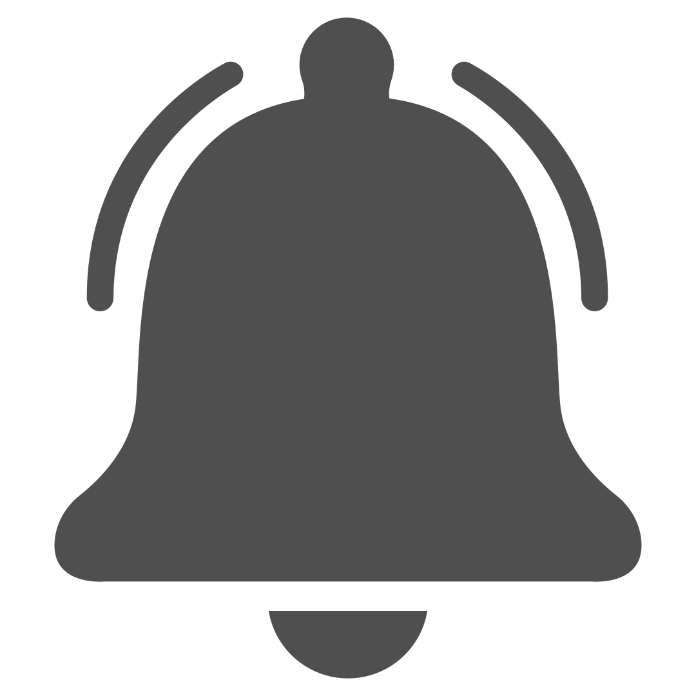

<!-- feed-principal.component.html -->
<nav class="top-nav">
    

    <ul class="nav-links">
        <li><a routerLink="/inicio" routerLinkActive="active">Inicio</a></li>
        <li><a routerLink="/explorar" routerLinkActive="active">Explorar</a></li>
        <li><a routerLink="/crear" routerLinkActive="active">Crear</a></li>
    </ul>

    <input type="search" placeholder="Buscar...">
    
    
    
</nav>

<!-- Aquí va el contenido principal de tu feed -->
